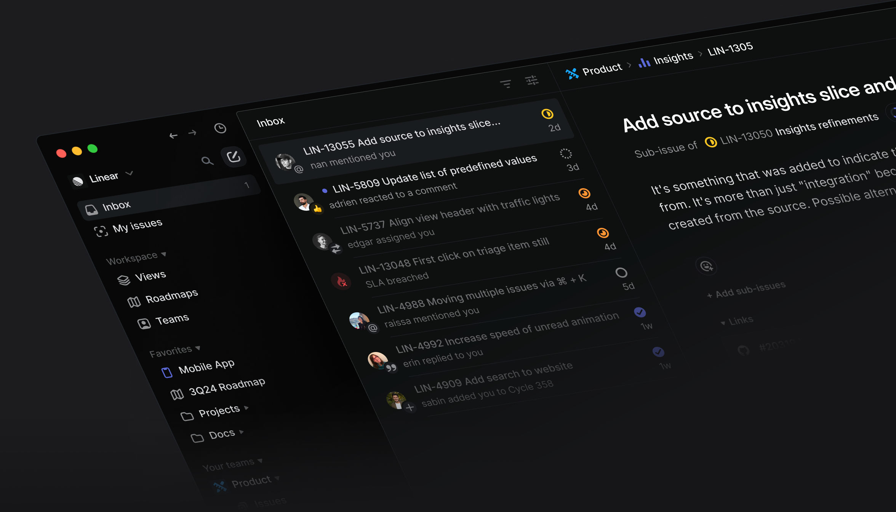
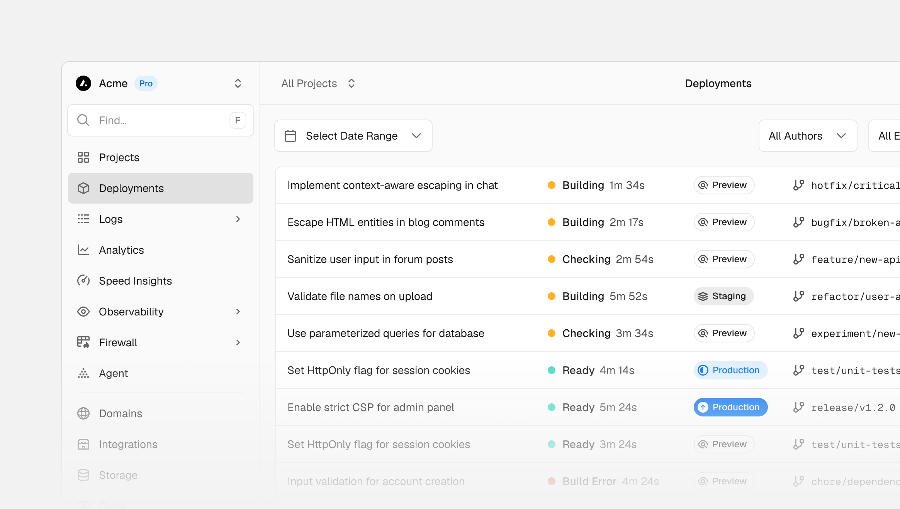
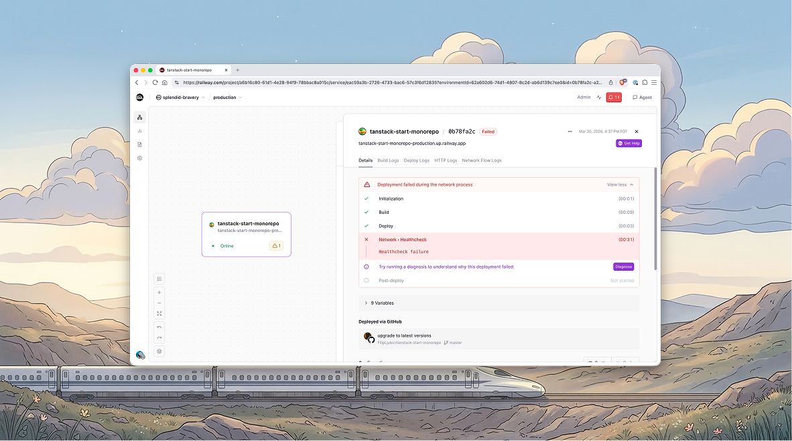
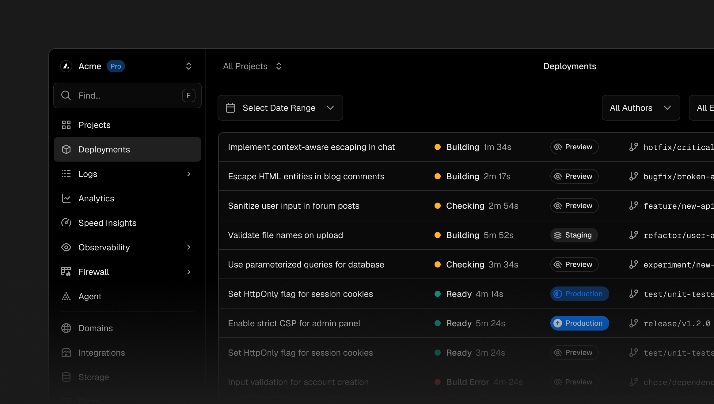

Devpilot design system · V3 research
从“AI 写出代码”
走到“放心交付”。
新的设计体系不再模仿传统运维后台，也不把 AI Chat 当作整个产品。它要让第一次发布的人看得懂，让熟练团队扫得快，让生产治理始终可信。
独特机制
Devpilot 把 AI 或人工生成的代码仓库，转化为可配置、可审计、可发布、可恢复的交付对象。
01 · 成熟工具的精密度
学习密度、层级、导航和状态表达；不复制品牌色、黑白皮肤或既有产品结构。



02 · Vibe Coding 的可理解性
学习任务语言、进度反馈与渐进披露；不让 Chat 侵占整个交付控制台。
03 · Devpilot 的合成方向
以下是研究结论，不是最终设计规范；后续代表页面必须用真实状态验证。
Recommended axis · guided control plane
安静的控制平面，活跃的任务表面。
全局导航与项目身份保持低噪声；当前交付任务成为唯一视觉主角。页面先说目标、状态、阻断和下一步，再按需展开 Manifest、Provider、Run ID 与原始证据。AI 只负责解释和拟定变更，服务端事实与人工确认拥有最终权威。
01
一个页面，一个当前任务
辅助信息可以密集，但不能与当前阻断和主操作争夺第一层级。
02
解释与证据分层
新用户先理解影响和去向，熟练用户一眼进入不可变证据。
03
AI 先拟定，用户再确认
所有 AI 修复必须显示计划、影响和待审核差异，不能营造自动成功。
04
密度来自对齐，不来自缩小
通过基线、列结构、分组和固定位置提高扫描效率，不堆小字。
04 · 明确拒绝
这些反模式会让 Devpilot 再次回到“普通后台换皮”。
×
AI 渐变与玻璃拟态
紫色光晕、漂浮玻璃和大面积渐变不能证明产品智能，只会削弱状态可信度。
×
万能卡片仪表盘
每块信息都装进同样的圆角卡片，会抹平任务、阻断、证据和背景之间的关系。
×
Chat 接管产品
对话是解释与拟定入口，不是导航、配置、审批、审计和恢复的替代品。